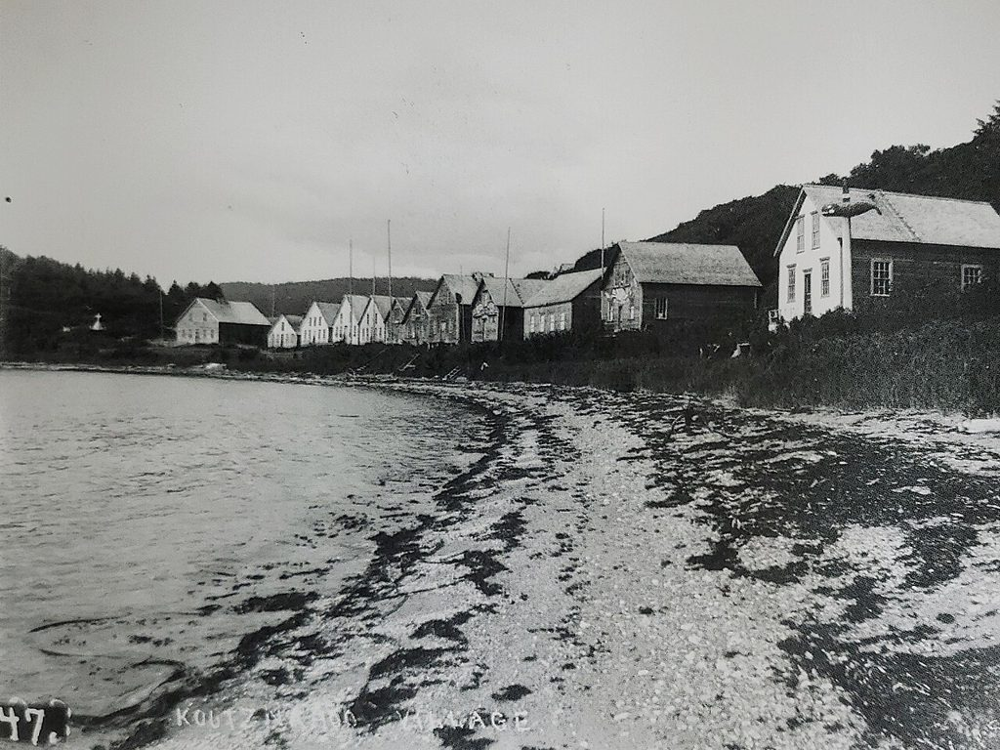
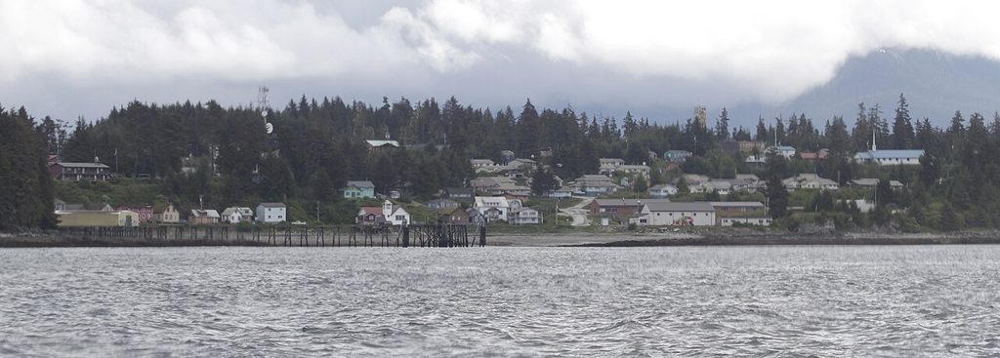

Directory / Southeast Alaska / Angoon, AK
Angoon tides & Kootznahoo Inlet currents — Admiralty Island
High and low tides for the coming week from NOAA station 9451895 (Killisnoo — 57.47, -134.565), about 2 NM south of town on Chatham Strait, plus slack-water times for Turn Point at the mouth of Kootznahoo Inlet. Times are local (AKST/AKDT). Heights are feet above Mean Lower Low Water (MLLW). Angoon sits on a narrow neck of land on the west coast of Admiralty Island, between Chatham Strait and the tide-rip entrance to Kootznahoo Inlet. It is the only permanent town on the island, about 78 NM southwest of Juneau and 67 NM northeast of Sitka by the state ferry’s count. There is no road out. People come and go on Alaska Seaplanes floatplanes from Juneau, on the state ferry LeConte at the Killisnoo terminal 3 miles south of town, or on their own boats. Angoon (Aangóon) has been a Kootznoowoo Tlingit village for centuries. Xootsnoowú means “fortress of the bears,” and Admiralty Island has one of the densest brown bear populations anywhere. In the 1880s the Northwest Trading Company ran a herring-oil works at Killisnoo, just south of town; the state ferry terminal is on Killisnoo Harbor today. Painted clan houses still line the waterfront, and the town is the starting point for the 32-mile Cross Admiralty Canoe Route.
Turn Point slack water, a 17-ft tide drop, $0.50/ft transient moorage, a fuel float & a dry town
The current at Turn Point. To reach the small boat harbor from Chatham Strait you go past Turn Point, where Kootznahoo Inlet narrows and the tide runs hard. NOAA’s current predictions for Turn Point, Kootznahoo Inlet (PCT4106), about 0.4 km from town, show these times for Saturday, November 28, 2026: max flood 8.9 kt at 1:36 AM, slack at 4:31 AM, max ebb 5.9 kt at 8:03 AM, slack at 10:38 AM, max flood 6.9 kt at 1:48 PM, slack at 4:23 PM and max ebb 7.9 kt at 8:04 PM. The flood sets east into the inlet (about 105°) and the ebb sets west out to the strait (about 285°). Through Dec 31 the strongest predictions are a 10.0-kt ebb at 6:27 PM on Christmas Day and a 9.9-kt flood just after midnight on Dec 26. PCT4106 is a subordinate station, computed from Wrangell Narrows (SEA0103) with fixed time and speed offsets, so treat the times as estimates. ADF&G’s harbor sheet also warns of swift current in the inlet and floatplanes landing near the harbor. The 8-day slack table is below the tide tables.
The tide swing. Killisnoo is a subordinate station: NOAA times its highs 6 minutes and lows 4 minutes before Juneau, with highs 2.1 ft lower. The predictions fetched 2026-11-27 show Saturday, Nov 28 with a 15.7 ft high at 3:16 PM and then a −1.7 ft low at 9:56 PM, a drop of about 17.3 ft. Christmas Eve is bigger: 17.8 ft at 12:39 PM down to −4.2 ft at 7:19 PM, a 22.0-ft drop. Minus tides fall on Nov 28–29, Dec 6–11 and Dec 21–28, all after dark. Sunrise is about 8:08 AM and sunset about 3:24 PM on Nov 28 (computed for Angoon).
Harbor. The City of Angoon runs the state-owned small boat harbor on Kootznahoo Inlet at Favorite Bay, about a mile from town. It has room for about 90 boats, plus power and lights on the floats, water in summer only, restrooms and trash. The harbormaster is Frank Joseph Jr. (253-453-1629). City Hall is 907-788-3653, and ADF&G lists the harbormaster as available Monday to Friday and the city on CB channel 5. The city’s posted rate sheet lists transient moorage at $0.50/ft per day. Stalls run $100–$200 a month or $360–$864 a year for 20–48 ft. There is no travelift and no repair yard. The Army Corps port survey lists a 16 × 72 ft timber tidal grid on the southeast side of the harbor approach. The nearest travelifts are the 150-ton lift at Sitka’s Gary Paxton Industrial Park (Highmark Marine) by way of Peril Strait, and Hoonah’s 220-ton HMIC lift to the north.
Fuel. Angoon Oil & Gas Co. (907-788-3436) runs the fueling float at the harbor, with three hose stations and about 10 ft alongside. It also receives fuel at the Killisnoo cargo dock. Hours are not posted online, and ADF&G says to check with the harbormaster on fuel status, so call before you count on it.
Ashore. Angoon Trading Co. (907-788-3111, 905 Killisnoo Road) handles groceries, hardware, lumber and freight, and has espresso. It is open 10 AM–4:30 PM and closed Sundays and major holidays, including Thanksgiving. The post office is open weekdays 10–1 and 2–5, and Saturday 9–1. SEARHC’s Jessie Norma Jim Health Center (907-788-4600) is open weekdays 8–5. Angoon is a dry community. The state’s local-option list shows a ban on both the sale and the importation of alcohol since Feb 1, 2013. That means no liquor store, and you may not bring alcohol into town.
Weather. api.weather.gov puts the Angoon waterfront, Turn Point, Killisnoo and Chatham Strait from Kootznahoo Inlet south nearly to Point Gardner in PKZ032 Northern Chatham Strait. The town point itself returns land zone AKZ324. We also show PKZ033 Southern Chatham Strait for the run south toward Frederick Sound and Baranof Island. In the forecasts issued at 2:17 PM Friday, Nov 27, 2026, Northern Chatham Strait has S 10 kt tonight with seas building to 3 ft, rain Saturday, N 15 kt Sunday and Monday, and SE 25 kt Tuesday. Southern Chatham Strait has 4-ft seas tonight (7 ft near ocean entrances), N 20 kt Sunday night and Monday, and SE 25 kt Tuesday. Neither zone had an advisory at fetch time. Check the live forecasts below before you go.
Computed from NOAA CO-OPS hi/lo predictions for 9451895 (2026-11-28 through 2026-12-31) and its MDAPI offsets (subordinate to 9452210); NOAA CO-OPS current predictions for PCT4106 (MAX_SLACK, 2026-11-28 through 2026-12-31) and its offsets (reference SEA0103); NWS Juneau coastal waters forecast text for PKZ032 and PKZ033 and api.weather.gov active alerts for PKZ032, PKZ033, PKZ034 and PKZ022; api.weather.gov point lookups at 57.503,-134.584 (AKZ324), 57.50,-134.60, 57.48,-134.62, 57.47,-134.58, 57.51,-134.55 and 57.30,-134.80 (all PKZ032) and 57.00,-134.70 (PKZ033); City of Angoon harbormaster page, home page and 2024 harbor rate sheet; ADF&G Angoon Harbor sheet; USACE Ports of Southeast Alaska port series (Angoon facilities); DOT&PF harbor directory; AMHS Southeast villages page; Angoon Trading Co. site; USPS locator; SEARHC clinic page; Alaska AMCO local option list (3/13/2024) — all checked 2026-11-27. Sunrise/sunset computed with the NOAA solar equations for 57.503 N, 134.584 W.
Angoon then & now
Historic


Current


Official NOAA predictions NOAA Turn Point currents Station home NOAA chart viewer View on Windy
Port Sponsor — Angoon, AK
Top placement for fuel, lodges, guides, freight and marine businesses on Kootznahoo Inlet and Chatham Strait.
$25–$50 / month
Tide data: NOAA CO-OPS station 9451895 (Killisnoo; subordinate to Juneau 9452210), predictions (hi/lo, MLLW, local standard/daylight time). Refreshed with each nightly build; the marine-weather snapshot time below shows the latest fetch. Killisnoo is about 2 NM south of town on the strait side. For nearby ports, see Tenakee Springs tides, Sitka tides, Hoonah tides and Juneau tides.
Saturday, November 28, 2026
| Tide | Time (local) | Height (MLLW) |
|---|---|---|
| High | 3:41 AM | 13.5 ft |
| Low | 9:18 AM | 3.9 ft |
| High | 3:16 PM | 15.7 ft |
| Low | 9:56 PM | -1.7 ft |
Sunday, November 29, 2026
| Tide | Time (local) | Height (MLLW) |
|---|---|---|
| High | 4:37 AM | 13.1 ft |
| Low | 10:19 AM | 4.4 ft |
| High | 4:15 PM | 14.1 ft |
| Low | 10:52 PM | -0.3 ft |
Monday, November 30, 2026
| Tide | Time (local) | Height (MLLW) |
|---|---|---|
| High | 5:38 AM | 12.8 ft |
| Low | 11:29 AM | 4.7 ft |
| High | 5:23 PM | 12.6 ft |
| Low | 11:53 PM | 1.1 ft |
Tuesday, December 1, 2026
| Tide | Time (local) | Height (MLLW) |
|---|---|---|
| High | 6:41 AM | 12.8 ft |
| Low | 12:46 PM | 4.4 ft |
| High | 6:41 PM | 11.3 ft |
Wednesday, December 2, 2026
| Tide | Time (local) | Height (MLLW) |
|---|---|---|
| Low | 12:58 AM | 2.3 ft |
| High | 7:43 AM | 13.1 ft |
| Low | 2:01 PM | 3.6 ft |
| High | 8:05 PM | 10.8 ft |
Thursday, December 3, 2026
| Tide | Time (local) | Height (MLLW) |
|---|---|---|
| Low | 2:03 AM | 3.1 ft |
| High | 8:38 AM | 13.6 ft |
| Low | 3:07 PM | 2.4 ft |
| High | 9:20 PM | 10.8 ft |
Friday, December 4, 2026
| Tide | Time (local) | Height (MLLW) |
|---|---|---|
| Low | 3:04 AM | 3.7 ft |
| High | 9:26 AM | 14.1 ft |
| Low | 4:03 PM | 1.3 ft |
| High | 10:24 PM | 11.3 ft |
Saturday, December 5, 2026
| Tide | Time (local) | Height (MLLW) |
|---|---|---|
| Low | 3:59 AM | 4.1 ft |
| High | 10:09 AM | 14.5 ft |
| Low | 4:49 PM | 0.3 ft |
| High | 11:17 PM | 11.8 ft |
Tidal currents — Turn Point, Kootznahoo Inlet (NOAA PCT4106)
Slack water and maximum flood/ebb from NOAA CO-OPS current predictions for station PCT4106 (Turn Point, Kootznahoo Inlet). Times local (AKST/AKDT). Predictions, not observations; wind and runoff change real currents. Not for navigation. Fetched 2026-11-27 21:23 AKST.
Saturday, November 28, 2026
| Event | Time (local) | Speed & set |
|---|---|---|
| Max flood | 1:36 AM | 8.9 kt toward 105° |
| Slack | 4:31 AM | — |
| Max ebb | 8:03 AM | 5.9 kt toward 285° |
| Slack | 10:38 AM | — |
| Max flood | 1:48 PM | 6.9 kt toward 105° |
| Slack | 4:23 PM | — |
| Max ebb | 8:04 PM | 7.9 kt toward 285° |
| Slack | 11:11 PM | — |
Sunday, November 29, 2026
| Event | Time (local) | Speed & set |
|---|---|---|
| Max flood | 2:28 AM | 8.2 kt toward 105° |
| Slack | 5:26 AM | — |
| Max ebb | 9:03 AM | 5.2 kt toward 285° |
| Slack | 11:39 AM | — |
| Max flood | 2:44 PM | 6.2 kt toward 105° |
| Slack | 5:20 PM | — |
| Max ebb | 9:10 PM | 6.7 kt toward 285° |
Monday, November 30, 2026
| Event | Time (local) | Speed & set |
|---|---|---|
| Slack | 12:08 AM | — |
| Max flood | 3:27 AM | 7.5 kt toward 105° |
| Slack | 6:25 AM | — |
| Max ebb | 10:09 AM | 4.7 kt toward 285° |
| Slack | 12:50 PM | — |
| Max flood | 3:50 PM | 5.5 kt toward 105° |
| Slack | 6:23 PM | — |
| Max ebb | 10:23 PM | 5.6 kt toward 285° |
Tuesday, December 1, 2026
| Event | Time (local) | Speed & set |
|---|---|---|
| Slack | 1:12 AM | — |
| Max flood | 4:34 AM | 6.8 kt toward 105° |
| Slack | 7:27 AM | — |
| Max ebb | 11:17 AM | 4.6 kt toward 285° |
| Slack | 2:07 PM | — |
| Max flood | 5:07 PM | 5.3 kt toward 105° |
| Slack | 7:33 PM | — |
| Max ebb | 11:35 PM | 4.8 kt toward 285° |
Wednesday, December 2, 2026
| Event | Time (local) | Speed & set |
|---|---|---|
| Slack | 2:21 AM | — |
| Max flood | 5:41 AM | 6.6 kt toward 105° |
| Slack | 8:30 AM | — |
| Max ebb | 12:24 PM | 4.9 kt toward 285° |
| Slack | 3:21 PM | — |
| Max flood | 6:16 PM | 5.5 kt toward 105° |
| Slack | 8:49 PM | — |
Thursday, December 3, 2026
| Event | Time (local) | Speed & set |
|---|---|---|
| Max ebb | 12:44 AM | 4.4 kt toward 285° |
| Slack | 3:31 AM | — |
| Max flood | 6:41 AM | 6.5 kt toward 105° |
| Slack | 9:31 AM | — |
| Max ebb | 1:27 PM | 5.4 kt toward 285° |
| Slack | 4:25 PM | — |
| Max flood | 7:17 PM | 6.0 kt toward 105° |
| Slack | 10:10 PM | — |
Friday, December 4, 2026
| Event | Time (local) | Speed & set |
|---|---|---|
| Max ebb | 1:51 AM | 4.4 kt toward 285° |
| Slack | 4:33 AM | — |
| Max flood | 7:35 AM | 6.6 kt toward 105° |
| Slack | 10:24 AM | — |
| Max ebb | 2:26 PM | 6.2 kt toward 285° |
| Slack | 5:20 PM | — |
| Max flood | 8:11 PM | 6.6 kt toward 105° |
| Slack | 11:21 PM | — |
Saturday, December 5, 2026
| Event | Time (local) | Speed & set |
|---|---|---|
| Max ebb | 2:53 AM | 4.7 kt toward 285° |
| Slack | 5:27 AM | — |
| Max flood | 8:26 AM | 6.7 kt toward 105° |
| Slack | 11:10 AM | — |
| Max ebb | 3:15 PM | 6.9 kt toward 285° |
| Slack | 6:07 PM | — |
| Max flood | 9:01 PM | 7.1 kt toward 105° |
Marine weather & cameras
NWS marine forecast — Northern Chatham Strait (PKZ032)
Issued 217 PM AKST Fri Nov 27 2026. Snapshot fetched 2026-11-27 21:23 AKST from NWS text product. Official zone forecast · Raw text
- .TONIGHT...S wind 10 kt. Seas building to 3 ft late.
- .SAT...S wind 10 kt. Seas 2 ft or less. Rain.
- .SAT NIGHT...SE wind 10 kt in the evening becoming light. Seas 2 ft or less. Rain in the evening. Patchy fog late.
- .SUN...N wind 15 kt. Seas 3 ft.
- .SUN NIGHT...N wind 15 kt. Seas 3 ft.
- .MON...N wind 15 kt. Seas 3 ft.
- .TUE...SE wind 25 kt. Seas 3 ft.
- .WED...SE wind 20 kt.
NWS marine forecast — Southern Chatham Strait (PKZ033)
Issued 217 PM AKST Fri Nov 27 2026. Snapshot fetched 2026-11-27 21:23 AKST from NWS text product. Official zone forecast · Raw text
- .TONIGHT...S wind 10 kt. Seas 4 ft, except 7 ft near ocean entrances.
- .SAT...S wind 10 kt in the morning becoming light. Seas 3 ft. Rain in the afternoon.
- .SAT NIGHT...Light winds becoming N 10 kt late. Seas 2 ft or less, except 5 ft near ocean entrances.
- .SUN...NE wind 15 kt. Seas 3 ft, except 6 ft near ocean entrances.
- .SUN NIGHT...NE wind 20 kt. Seas 4 ft.
- .MON...N wind 20 kt. Seas 4 ft.
- .TUE...SE wind 25 kt. Seas 2 ft or less.
- .WED...S wind 25 kt.
Nearby NDBC observation — Point Craven (PCXA2, Marine Exchange of Alaska, across Chatham Strait at Peril Strait, about 9 NM W)
wind 240°, 4 kt, gust 8 kt, air 40°F, 1020.0 hPa
Observation time 2026-11-27 21:02 AKST (converted to AKST). Attribution: NOAA NDBC station PCXA2. Snapshot fetched 2026-11-27 21:23 AKST.
Nearby NDBC observation — Point Gardner (PGXA2, Marine Exchange of Alaska, south tip of Admiralty Island, about 29 NM S)
wind 80°, 3 kt, gust 7 kt, air 40°F, 1018.9 hPa
Observation time 2026-11-27 21:02 AKST (converted to AKST). Attribution: NOAA NDBC station PGXA2. Snapshot fetched 2026-11-27 21:23 AKST.
Nearby NDBC observation — Tenakee Springs (TKEA2, Marine Exchange of Alaska, Tenakee waterfront, about 26 NM NNW)
wind 30°, 2 kt, gust 3 kt, air 40°F, 1019.5 hPa
Observation time 2026-11-27 21:02 AKST (converted to AKST). Attribution: NOAA NDBC station TKEA2. Snapshot fetched 2026-11-27 21:23 AKST.
Harbor webcams
- FAA WeatherCams — Angoon (PAGN) (four cameras at the Angoon seaplane base looking northeast, east, southeast and northwest over Kootznahoo Inlet and the town; link only, not embedded)
- Kootzcam — Angoon, live from the Kootz Raven-Beaver Building (public live camera on the Kootznoowoo, Inc. site; link only, not embedded or rehosted)
- FAA WeatherCams — Tenakee Springs (Tenakee Inlet and northern Chatham Strait, about 26 NM north)
We checked these on 2026-11-27 around 9:15 PM AKST. The FAA camera list shows the Angoon site (PAGN) with northeast, east, southeast and northwest cameras. The Angoon Kootzcam stream on the public page reported as connected. Sunset is about 3:24 PM in late November, so expect dark frames on winter evenings. Businesses with a public cam: email us and we will link it.
Angoon boater notes (official links)
- City of Angoon — Harbor Master: Frank Joseph Jr. (253-453-1629). City Hall 907-788-3653, 700 Aandeinaatt St, PO Box 189. The city’s posted harbor rates list transient moorage at $0.50/ft per day, and stalls (20, 24, 32, 36 and 48 ft) at $100–$200 a month or $360–$864 a year.
- ADF&G — Angoon Harbor sheet: state-owned floats run by the city, about 90 vessels, power and lights on the float, water in summer only, fuel (check with the harbormaster), no repair facilities, restrooms and trash, and parking at the top of the harbor. It is in Kootznahoo Inlet a mile from the city center. Watch for floatplanes landing near the harbor and for swift current.
- NOAA current predictions — Turn Point, Kootznahoo Inlet (PCT4106): slack and max-current times for the narrows between the strait and the harbor. Flood sets about 105° (into the inlet) and ebb about 285°. Predicted peaks are near 9–10 kt on big tides.
- Alaska Marine Highway — Angoon terminal (ANG): Killisnoo Harbor, 3 miles from town. Book through the AMHS reservations call center (800-642-0066). Alaska Seaplanes flies from Juneau up to three times a day in summer and once or twice a day in winter (Angoon outstation 907-788-3530).
- Alaska AMCO — local option communities: Angoon (99820) bans the sale and importation of alcohol, effective 2/1/2013.
- ADF&G 2026 Southeast shore-based processors by port: no plant is listed in Angoon. The nearest registered plants are in Sitka (Sitka Sound Seafoods, Seafood Producers Cooperative, Silver Bay) and Hoonah (Hoonah Cold Storage).
- NOAA ENC chart viewer: Chatham Strait, Killisnoo Harbor, Kootznahoo Inlet and Favorite Bay. We link to NOAA’s viewer and do not host charts.
Local marine & shore directory
Verified public listings only. List free · Get featured
Marine services
Moorage & marinas
Seafood processors & buyers
Fuel docks
Shipyards & haul-outs
Boat repair & mechanics
No verified listing yet — list your business free.
Marine suppliers & chandleries
No verified listing yet — list your business free.
Electronics sales & installation
No verified listing yet — list your business free.
Welding & fabrication
No verified listing yet — list your business free.
Canvas & upholstery
No verified listing yet — list your business free.
Surveyors
No verified listing yet — list your business free.
Towing & salvage
No verified listing yet — list your business free.
Ice & bait
No verified listing yet — list your business free.
Fishing charters
Ashore for boaters
Groceries & provisioning
Hardware
Liquor stores
No verified listing yet — list your business free.
Laundromats
No verified listing yet — list your business free.
Showers
No verified listing yet — list your business free.
Lodging
Restaurants
No verified listing yet — list your business free.
Medical clinics
Pharmacies
No verified listing yet — list your business free.
Post office & shipping
Airport & floatplane
Propane
No verified listing yet — list your business free.
Auto & truck rental
No verified listing yet — list your business free.
We checked these listings on 2026-11-27 against public sources: the City of Angoon home page, harbor master page and business directory, the ADF&G harbor sheet, the USACE port series, AMHS, Alaska Seaplanes, USPS, SEARHC, and each business’s own site. Angoon has no shore-based seafood processor on the ADF&G 2026 list, so the processors shown are the nearest plants in Sitka and Hoonah. No liquor listing appears because Angoon bans the sale and importation of alcohol. Angoon business? List free or email J.L. Miller with a correction.
Local news — Angoon, AK
Plain links to local outlets. Always check the source for the latest. Local news partners welcome.
Free weekly tides & marine weather
Get a short email for your port. We do not sell your email. Privacy.
Mailing list powered by Buttondown.
Boating gear on Amazon
As an Amazon Associate I earn from qualifying purchases.
Helpful search links for common gear. Prices and availability are on Amazon.
Other Alaska ports
- Tenakee Springs tides
- Gustavus tides
- Hoonah tides
- Pelican tides
- Elfin Cove tides
- Craig tides
- Haines tides
- Skagway tides
- Juneau tides
- Yakutat tides
- Sitka tides
- Petersburg tides
- Wrangell tides
- Ketchikan tides
- Cordova tides
- Prince William Sound ports overview
- Valdez tides
- Whittier tides
- Kenai tides
- Homer tides
- Kodiak tides
- Dutch Harbor tides
- Unalaska tides
Sources
- Tide predictions: NOAA CO-OPS station 9451895 Killisnoo via the CO-OPS data API (hi/lo, MLLW, local time); station metadata and offsets from the CO-OPS MDAPI (subordinate to Juneau 9452210)
- Current predictions: NOAA CO-OPS station PCT4106 Turn Point, Kootznahoo Inlet (MAX_SLACK), subordinate to SEA0103 Wrangell Narrows
- Marine forecasts: NWS Juneau coastal waters text products PKZ032 and PKZ033; zones confirmed with api.weather.gov point lookups on 2026-11-27 (no active alerts for PKZ032, PKZ033, PKZ034 or PKZ022 at fetch time)
- NDBC observations: PCXA2 Point Craven, PGXA2 Point Gardner and TKEA2 Tenakee Springs (Marine Exchange of Alaska). The refresh shows a station as unavailable when its latest report is more than a day old
- Harbor, fuel & town: City of Angoon home, harbor master, directory and harbor-rate pages; ADF&G Angoon Harbor sheet; USACE Ports of Southeast Alaska port series (Angoon fueling float, pier, harbor floats and Killisnoo cargo dock); DOT&PF harbor directory; AMHS Southeast villages page; Alaska AMCO local option list — all checked 2026-11-27
- FAA WeatherCams camera list (Angoon PAGN, Tenakee Springs) and the Kootznoowoo, Inc. Kootzcam page — checked 2026-11-27
- ADF&G 2026 Southeast Alaska shore-based processors by port (no Angoon plant listed)
- History: AMHS Southeast villages page (only permanent settlement on Admiralty Island; distances; Cross Admiralty Canoe Route); Alaska Seaplanes — Angoon (Kootznoowoo Tlingit, clan houses, “fortress of the bears”); University of Washington Libraries Killisnoo photographs on Wikimedia Commons (Northwest Trading Company works, 1886–1890)
- Directory:
data/businesses.csvrows for port_slug=angoon, each with its public source URL (verified 2026-11-27) - Photos: Vincent I. Soboleff, about 1900 (public domain), and James Brooks, 2014 (CC BY 2.0), via Wikimedia Commons. Graphics: original Pacific Tides artwork (Kootznahoo Inlet mast, Turn Point tide-rip arrows, brown bear).